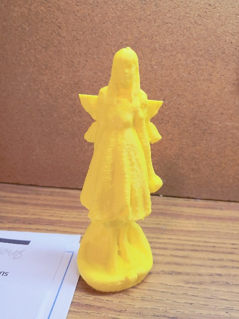
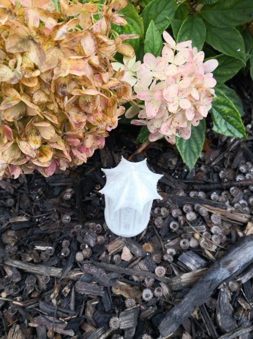

We are at the end of this semester now, so we are required to make our final projects as our exam. After Talk with Mr.Gerber, I
decided to make a butterfly wich movable wings. I was planning to use arduino with servo to serve as the power to pull the wings
of the butterfly. This design is actually really really challenge. I spent over 15 hours in it, but eventually I finished it!
I felt so satisfied.
I used four different processes in my butterfly projects: Arduino, electric, Computer aid design and lasier cut.
Step1:
I first
found a copy right free image of a butterfly on the website, then I imported it into Corel Draw. In Corel Draw I changed the format
of this butterfly image from jpg. to stl. Then I imported this this stl formatted image to Fusion 360. In Fusion 360
I extruded the butterfly，so now I had a 3D butterfly model.
Step2:
After finished all of these, I found out that toothpick might be good axles for my butterfly. Therefore, I measured the
width of toothpick which is exat 2 mm. Then I designed four gaps which are 2 mm wide on the bottom and top of the wings of
the butterfly. I made the size of my butterfly around a reasonable size which is 5 cm and imported the whole
thing to Corel Draw again in order to laser cut it. Then I downloaded this file
in my flashdrive and went to use laser cut to cut my butterfly. I actually cutted my butterfly several times, because
after I laser cutted this butterfly, I found out it was too small, so then I changed the size of my butterfly to 9 cm. Finally
after several failures, I got my perfectly cutted butterfly.

In the class today I needed to creat a model that needed to be made addictively. I built a model of a traditional chinese tower which is the mimic of a Chinese pavilion. This is one of the most famous architectural features ini China. It did take me a lot of time to build this model because I need to draw a complex geometic shape then revovled the whole thing. I actually asked for help from my friend to teachm me how to build the top part of my tower. Although I have to take off the extra plastic support for the pavilion myself, I do like it and I think it ended up to be really well-printed pavilion


In class today I created a useful object.Because I have a lot of extra pencils which can't fit in my pencilcase on my desk, I decided to deisgn